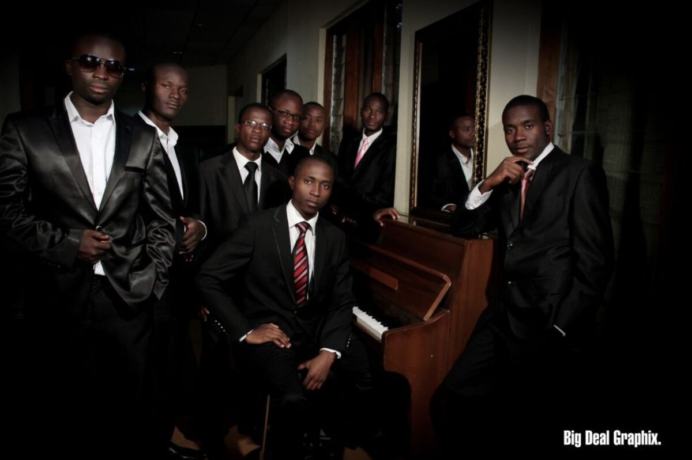

01 · DEBUT ALBUMKasambwe
The album that began our recorded ministry journey in 2012.
CHRISTIAN MUSIC MINISTRY · EST. 2012
Proclaiming Jesus Christ through Scripture-rooted gospel music, testimony and service—from Zambia to every listening heart.
“Let every thing that hath breath praise the Lord.” Psalm 150:6
THE NEXT CHAPTER
Mwari continues a musical journey that began with our debut album in 2012. Join us as this new song reaches listeners across Zambia and beyond.
Open the official music link →New music · Distributed by DistroKid
OUR MUSIC
From our first studio album to live-series recordings and the new chapter of Mwari, every project carries the gospel in the reflective, serene sound of All for Christ.

01 · DEBUT ALBUMThe album that began our recorded ministry journey in 2012.
A continuing testimony of faith expressed through song.
The latest chapter, bringing new music to listeners worldwide.
Explore Mwari ↗LISTEN WORLDWIDE
OUR STORY
All for Christ began among singers connected to Kitwe Seventh-day Adventist Church, united by a desire to proclaim the gospel through music.
As life carried members to Lusaka and into different congregations, the fellowship continued. Since our first album in 2012, every project has been sustained through the members’ own sacrifice, prayer and shared conviction.
Today we are preparing the ministry for its next season: preserving the music entrusted to us, serving with accountability and carrying Christ-centred songs to a wider audience.
WHY WE SING
“To proclaim the everlasting gospel of Jesus Christ through music that is rooted in Scripture, rich in hope and offered entirely for His glory.”
Our name is our commitment: every voice, gift and opportunity belongs to Christ.
We seek music that carries biblical truth clearly, faithfully and beautifully.
We are building structures that protect unity, stewardship and accountability.
KEEP IN STEP WITH THE JOURNEY